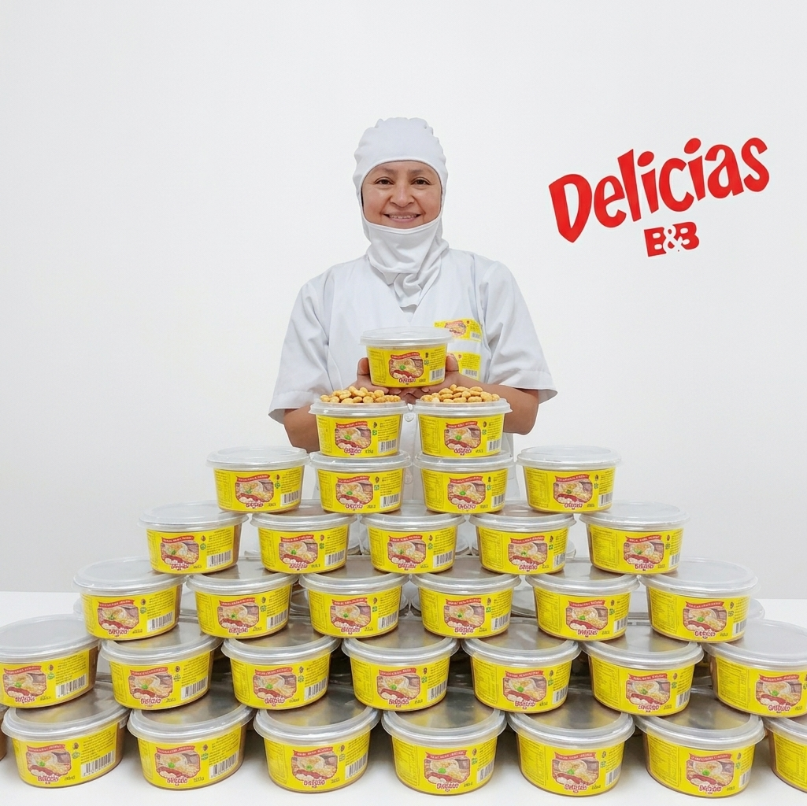

01
.jpeg)
Molido · 250 g
Maní forma molido
Maní molido, listo para sumar su sabor y textura a tus recetas favoritas.
Hecho con cariño · 100% artesanal
Sabores honestos, preparados a mano y pensados para compartir momentos deliciosos.
Conoce nuestros productos.jpeg)
Nuestros favoritos
Recetas sencillas, ingredientes seleccionados y ese toque casero que se nota desde el primer bocado.
Molido · 250 g
Maní molido, listo para sumar su sabor y textura a tus recetas favoritas.
.jpeg)
Quebrado · 250 g
Trozos de maní para dar un toque crocante a tus preparaciones y momentos para compartir.

Pequeños lotes,
grandes detalles.
Cómo empezó
Delicias BYB nació en una cocina familiar, entre el aroma del maní recién tostado y las ganas de crear algo propio. Empezamos preparando pequeñas cantidades para compartir con quienes más queríamos.
Con cada frasco llegaron nuevas historias, recomendaciones y personas que se enamoraron de nuestro sabor artesanal. Hoy seguimos trabajando igual: con paciencia, cuidado y mucho cariño en cada preparación.